Halo, saya Dikki Datri Murdoko. Praktisi K3 (HSE) bersertifikasi dengan latar belakang S1 Teknik Informatika. Menggabungkan standar Keselamatan dan Kesehatan Kerja (K3) yang ketat dengan pendekatan sistematis berbasis data.
Tersertifikasi
Ahli K3 Umum
Pengawas K3 Migas
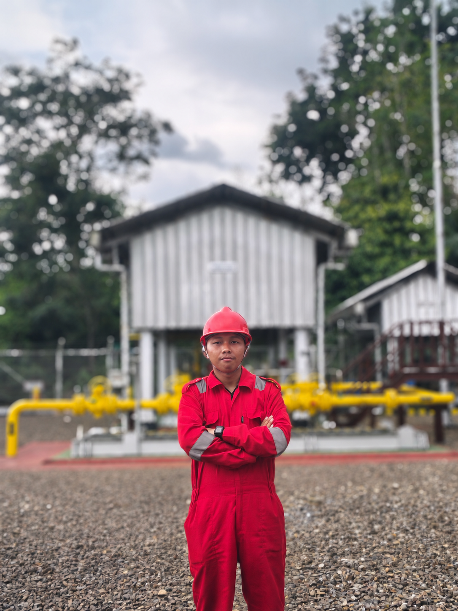
Dokumentasi Pribadi
Saya merupakan lulusan Teknik Informatika dari IIB Darmajaya yang memiliki ketertarikan kuat dan telah beralih fokus ke bidang Keselamatan dan Kesehatan Kerja (K3). Saya percaya bahwa latar belakang IT memberikan keuntungan unik dalam memahami alur kerja sistematis, manajemen data inspeksi data harian, dan penerapan visualisasi metrik K3 terdigitalisasi.
Saya adalah individu yang mandiri, adaptif di lingkungan baru, dan selalu terbuka terhadap kritik konstruktif. Saya menyukai tantangan teknis lapangan maupun perancangan solusi analitis untuk mitigasi risiko kecelakaan kerja di industri berskala menengah hingga besar.
S1 Teknik Informatika
IIB Darmajaya (IPK 3.87)
Lampung Utara,
Lampung, Indonesia
Rekam jejak karir dan proyek yang telah saya tangani.
Dokumentasi pelaksanaan program K3 dan inspeksi keselamatan langsung di lapangan.
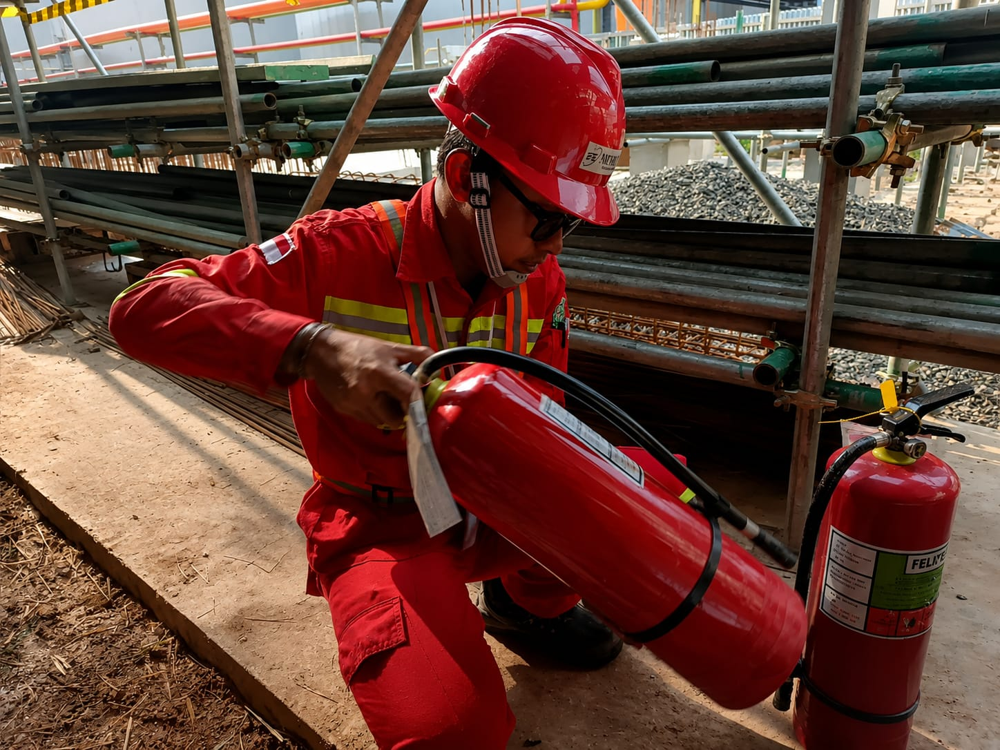
Inspeksi APAR
Pengecekan berkala kesiapan tabung proteksi kebakaran di lokasi.
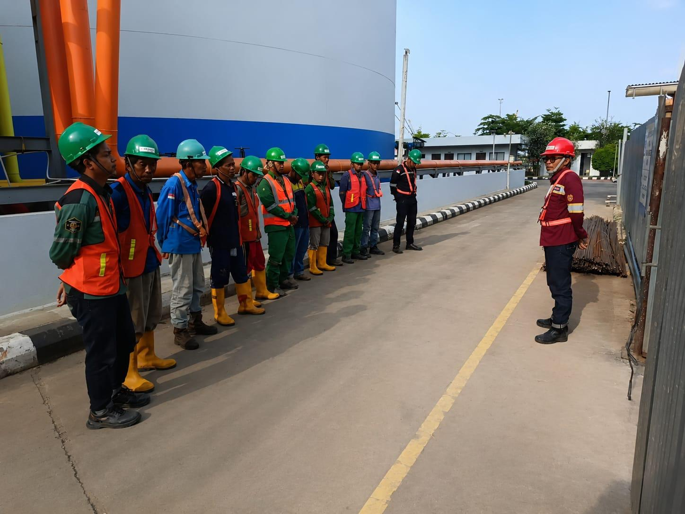
Toolbox Meeting
Pengarahan ringkas mengenai bahaya pekerjaan harian sebelum dimulai.
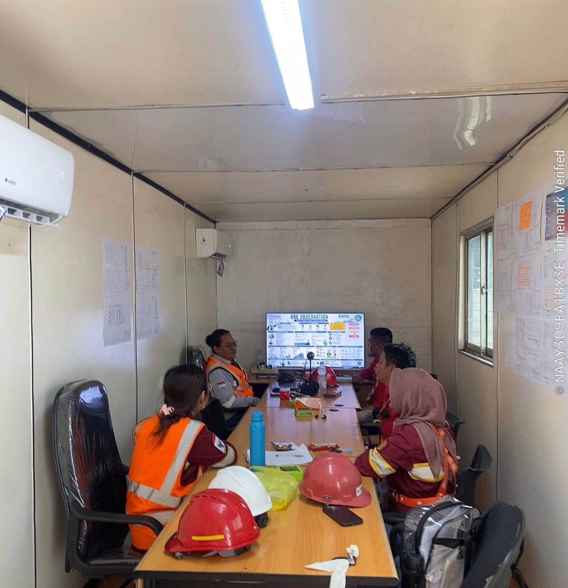
Safety Briefing Weekly
Koordinasi K3 krusial di wilayah kerja konstruksi berat.
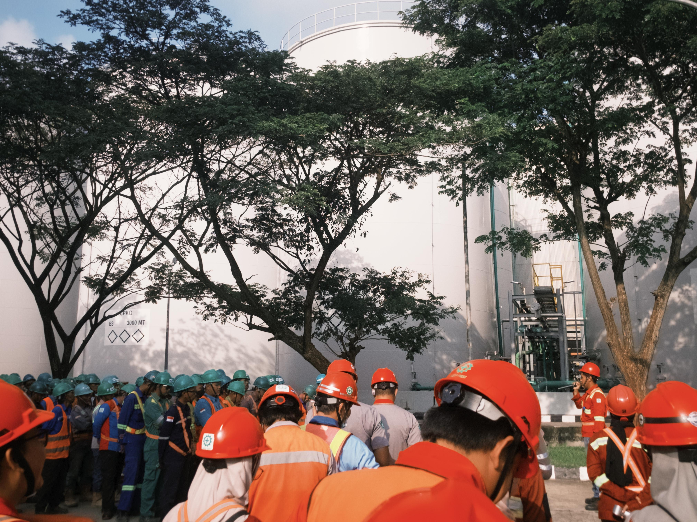
General Safety Talk
Rutinitas bulanan untuk membangun budaya saling peduli dan mencegah kecelakaan kerja.
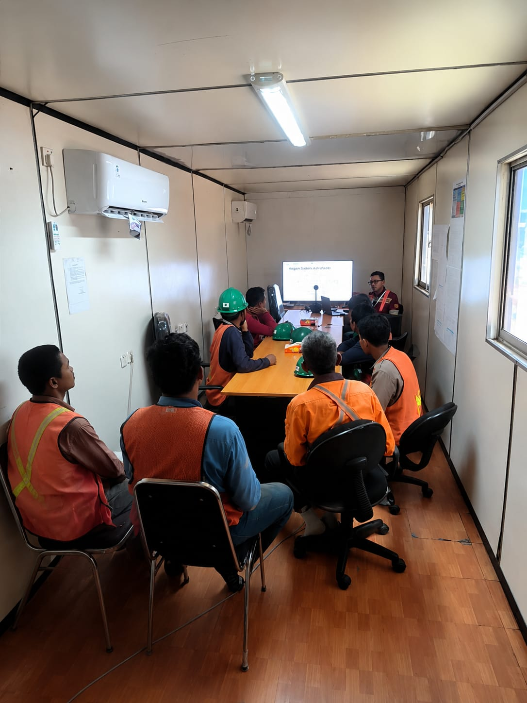
Safety Induction & Talk
Memberikan orientasi keselamatan bagi pekerja baru atau tamu area proyek.
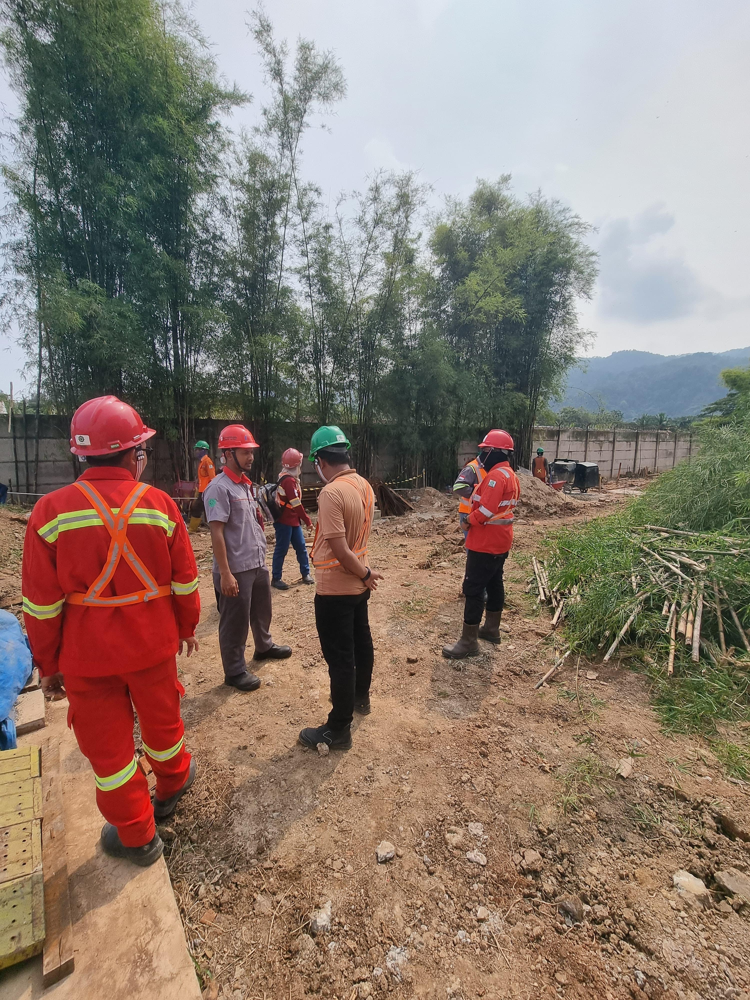
Audit Internal K3
Melakukan pengecekan kepatuhan sistem dan administrasi HSE di lapangan.
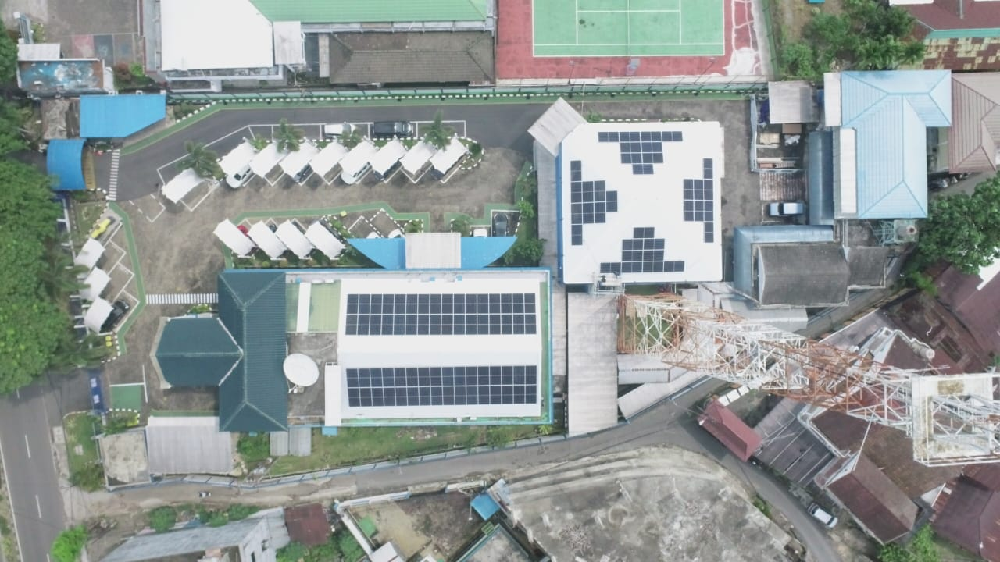
Hasil Pemantauan Udara PLTS
Pemantauan visual area instalasi panel surya untuk memastikan keamanan tata letak.
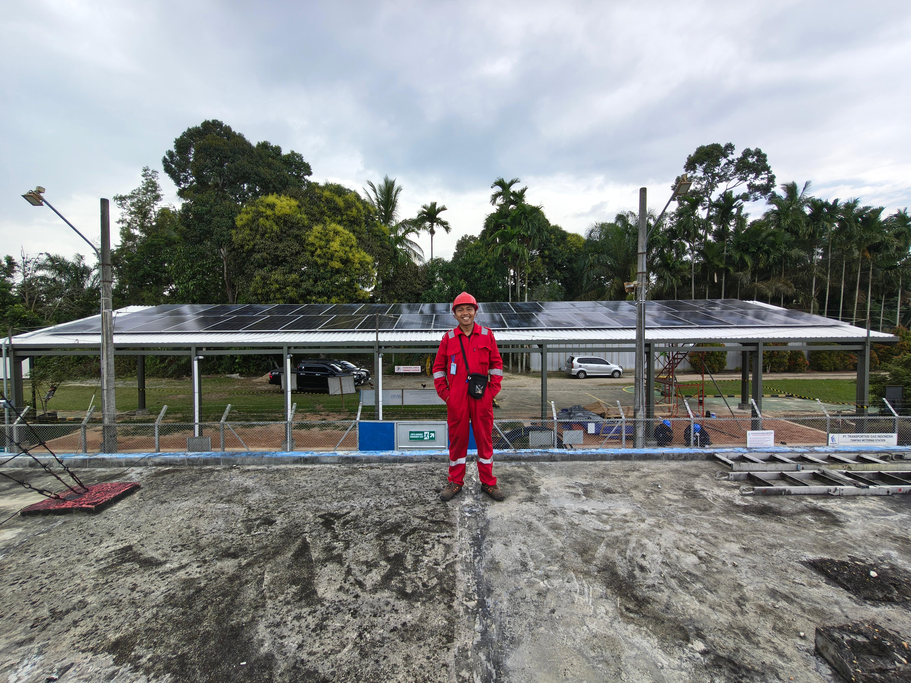
Dokumentasi Pribadi
Dokumentasi pribadi proyek PLTS Atap On-Grid Tempino, Jambi.
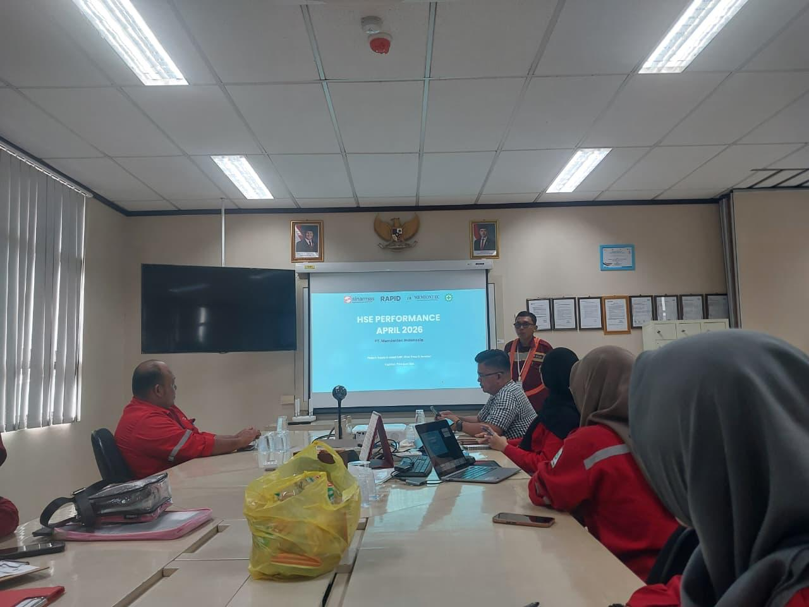
Presentasi Kinerja HSE
Pemaparan statistik program K3 bulanan kepada jajaran manajemen secara komprehensif.
Menggabungkan kemampuan Teknik Informatika dalam visualisasi bagan dengan standar manajemen K3 (HSE) yang mutakhir.
Daftar Dokumen Analisis
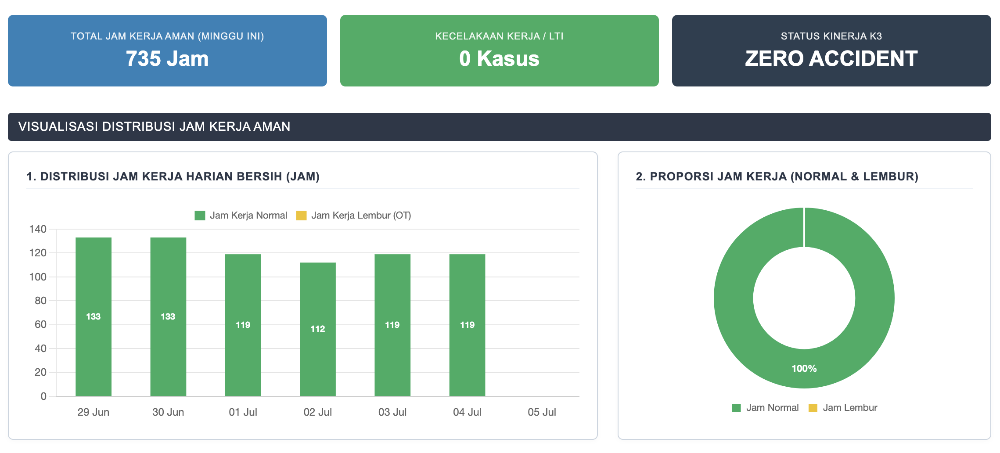
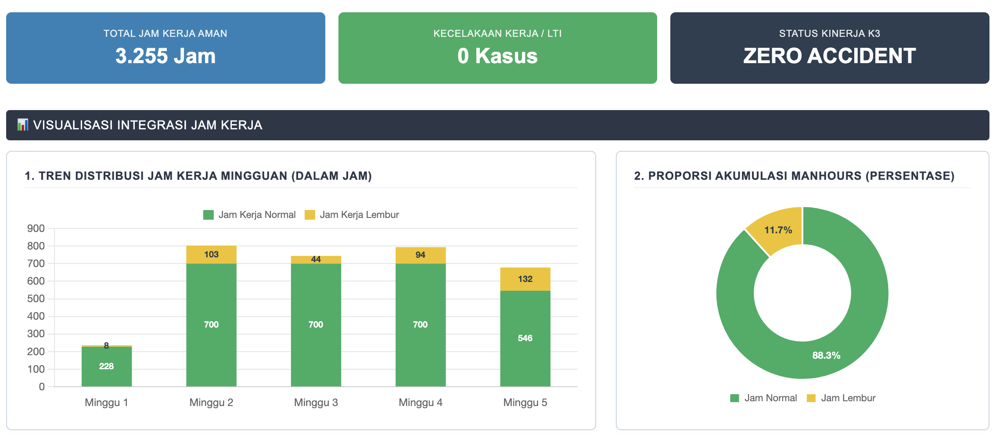
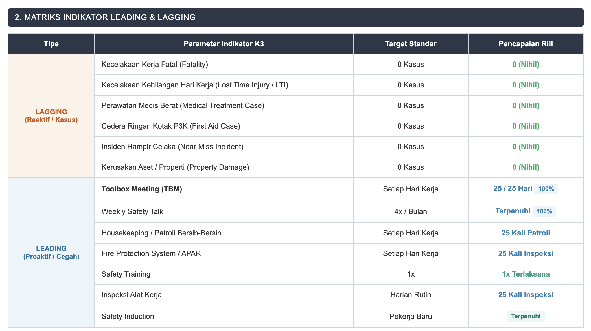
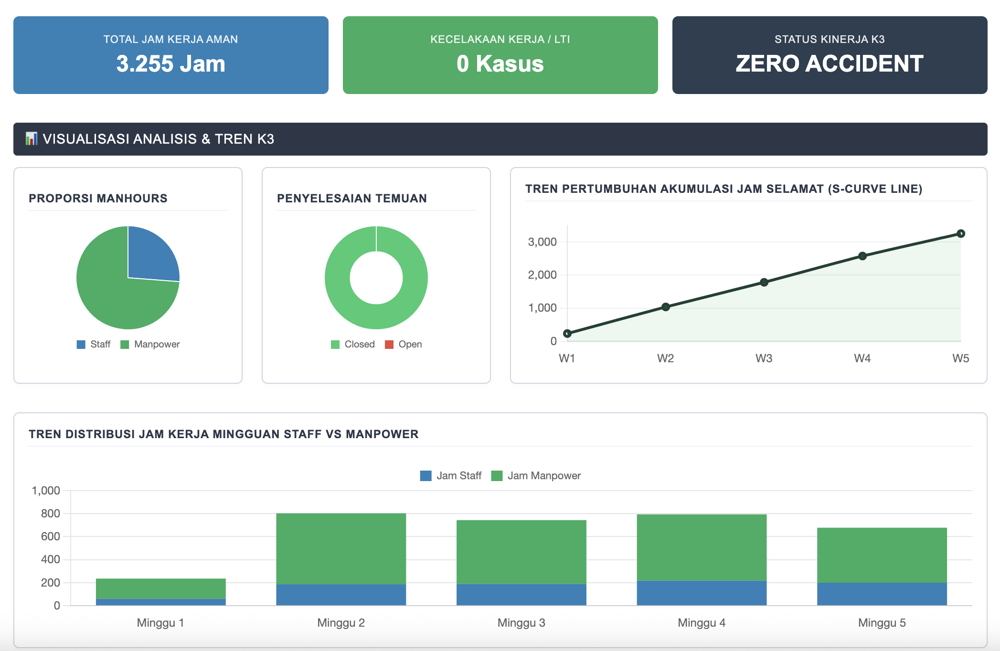
Laporan ini mendokumentasikan total jam kerja aman harian bersih pada minggu berjalan, memisahkan secara presisi antara Jam Kerja Normal dan Jam Kerja Lembur (OT) untuk memantau status kelelahan pekerja sekaligus memelihara rekor Zero Accident.
Kompetensi yang diakui secara resmi untuk menjamin keselamatan kerja industri.
PJK3 Mutiara Mutu Sertifikasi | Des 2024
PJK3 Aliem Institute | Juni 2026